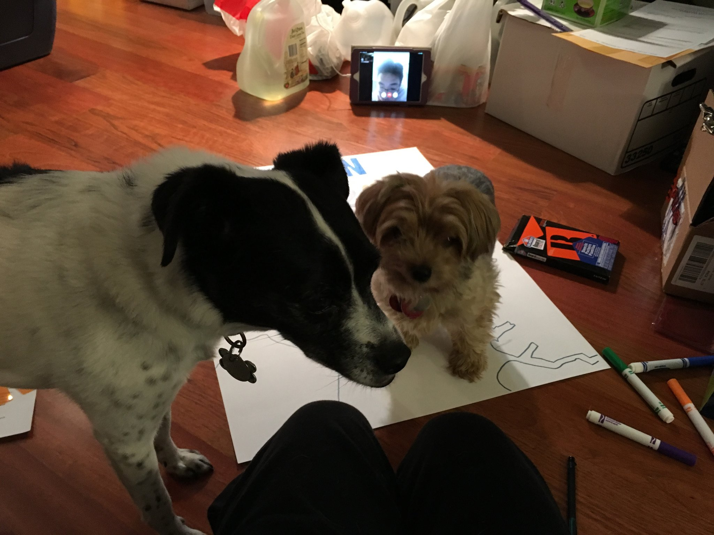
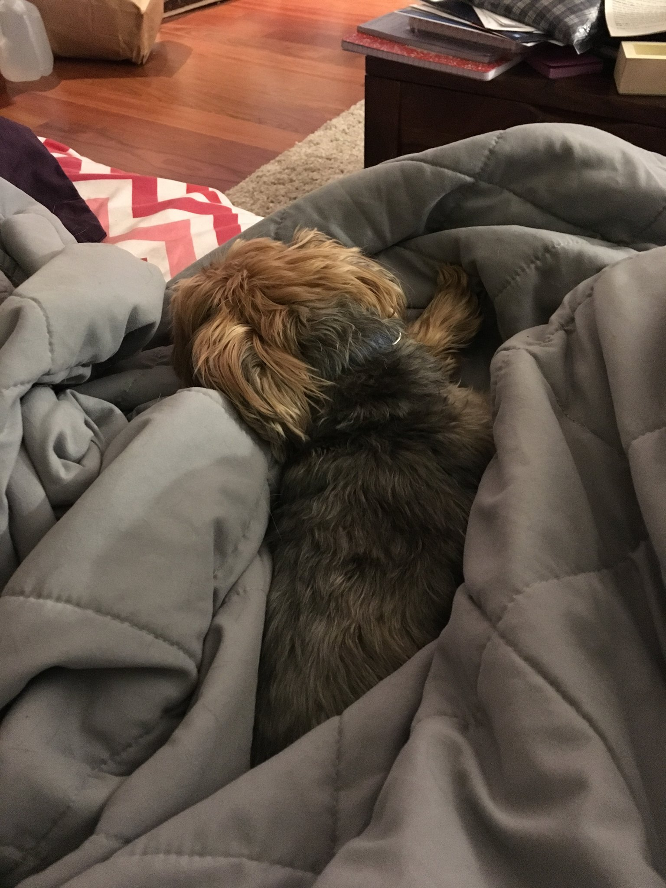
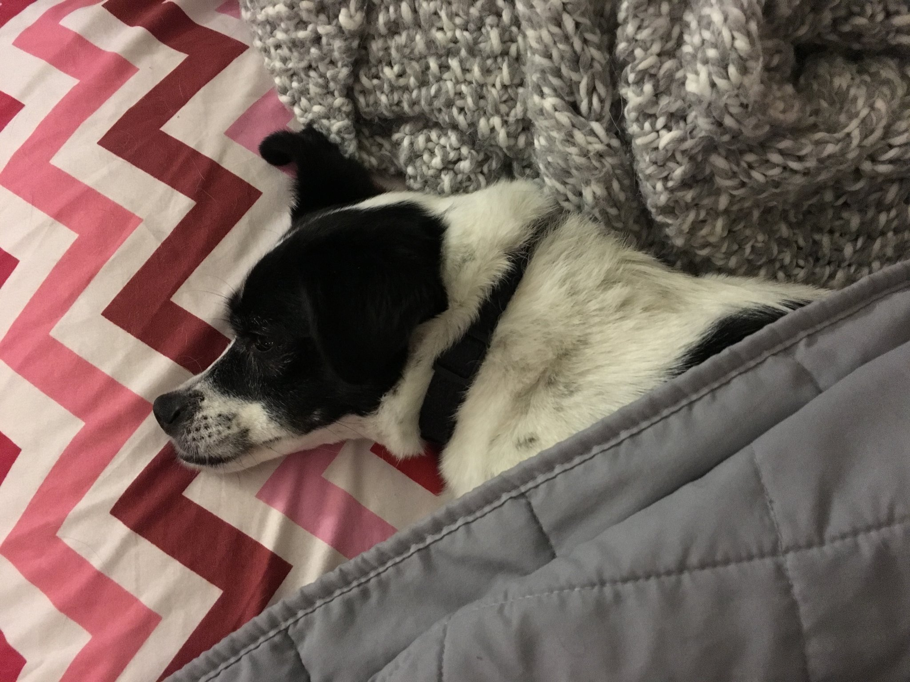
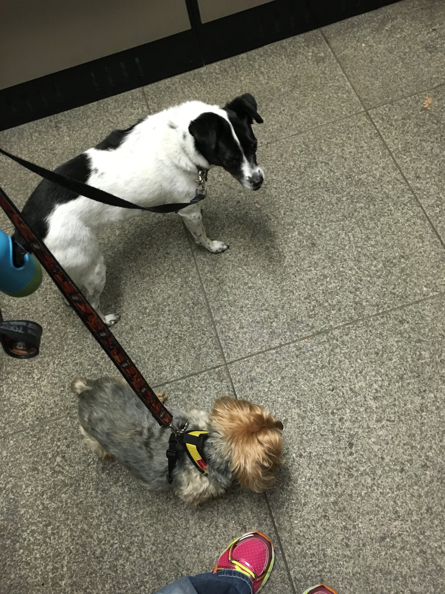
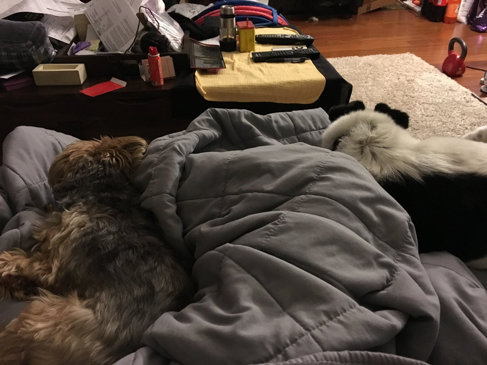
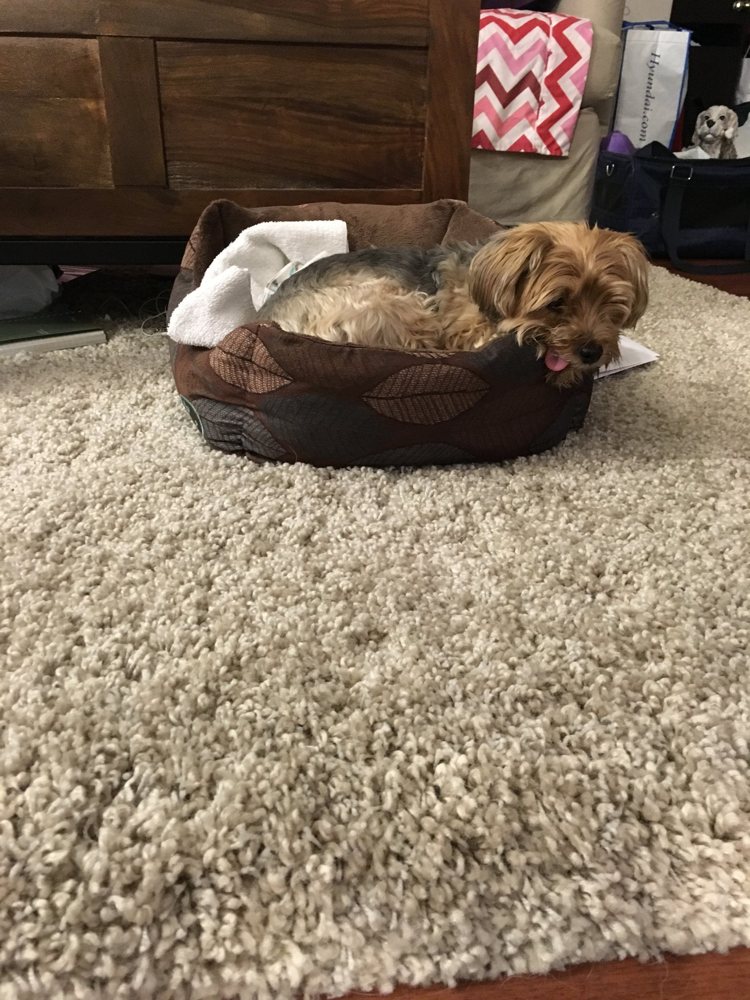
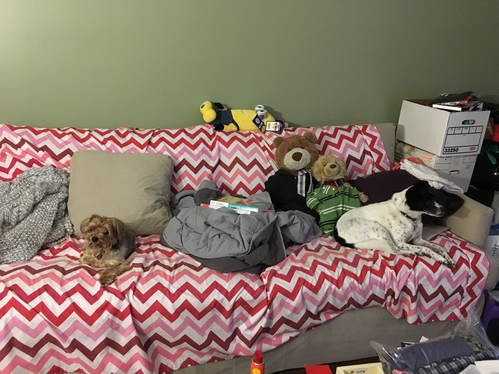

Brother Bear seems to think that I don't know how to ride in an elevator because I never lived in New York. But I showed Mom and Dad that this old dog can learn new tricks. Look how calm I am.
I guess you're sleeping too. Sweet dreams, Brother Bear. We'll have more adventures tomorrow.
When Mom goes away, sometimes I stay with Brother Bear in Brooklyn. He shares his food and water with me. When Brother Bear visits, he never stays long but he's been here for awhile now.
Here in Morristown, we have lots of grass. It's great to pee and poop on. You can even scratch your paws!! Feels so good.
At first Brother Bear didn't want to sit close to me. I don't know why. I took a bath two months ago.

Maybe he was dreaming about his bed in Brooklyn...
Maybe we can share…

I love taking walks but this last one tired me out. How are you Brother Bear?

Mom is usually busy doing things we can't help her with but I think we did a great job with the poster. Don't you think so Brother Bear?



